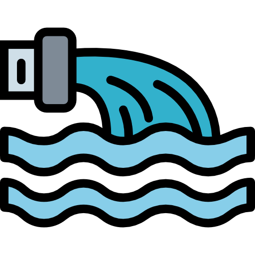
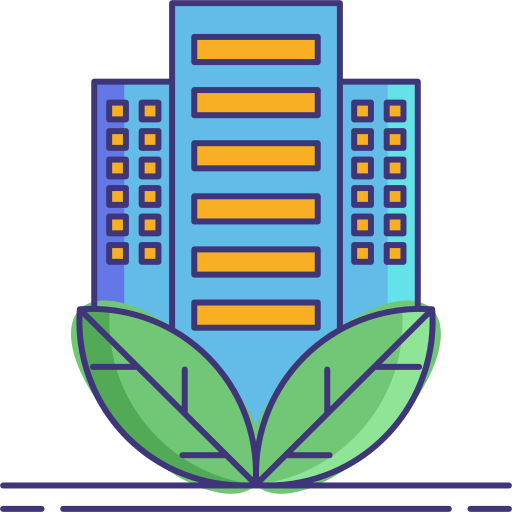

Evitar o uso excessivo
Em tarefas simples ajuda a reduzir o consumo de energia dos Data Centers. Quanto menos processamento desnecessário, menor será o impacto ambiental causado pelos sistemas.

Em tarefas simples ajuda a reduzir o consumo de energia dos Data Centers. Quanto menos processamento desnecessário, menor será o impacto ambiental causado pelos sistemas.

Apoiar as que utilizam energia renovável e sistemas de resfriamento mais eficientes incentiva práticas mais sustentáveis no desenvolvimento da inteligência artificial.
Conversar sobre os impactos ambientais da IA ajuda mais pessoas a entenderem o problema. Quanto maior a conscientização, maiores são as chances de criar soluções e hábitos tecnológicos mais responsáveis.